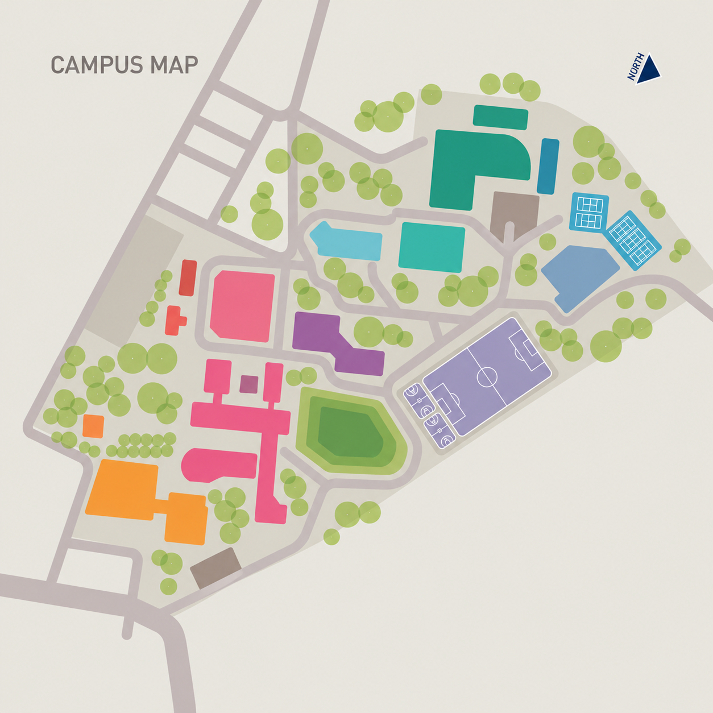

CUK CAMPUS SAFETY
지켜보카
우리 학교, 우리가 지켜보카!
가톨릭대학교 성심교정 교내 안전맵
지도의 빨간 핀을 누르면 그 건물의 소방 시설 위치와 사용법을 볼 수 있어요.
응급 상황이면 먼저 119에 전화하세요
🚩 정문
CUK CAMPUS SAFETY
우리 학교, 우리가 지켜보카!
가톨릭대학교 성심교정 교내 안전맵
지도의 빨간 핀을 누르면 그 건물의 소방 시설 위치와 사용법을 볼 수 있어요.
응급 상황이면 먼저 119에 전화하세요